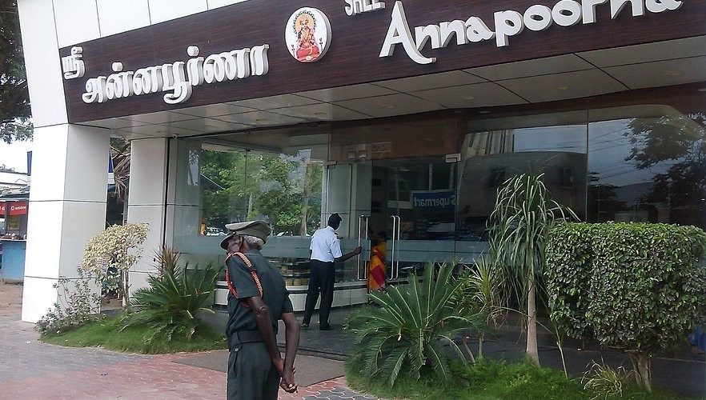
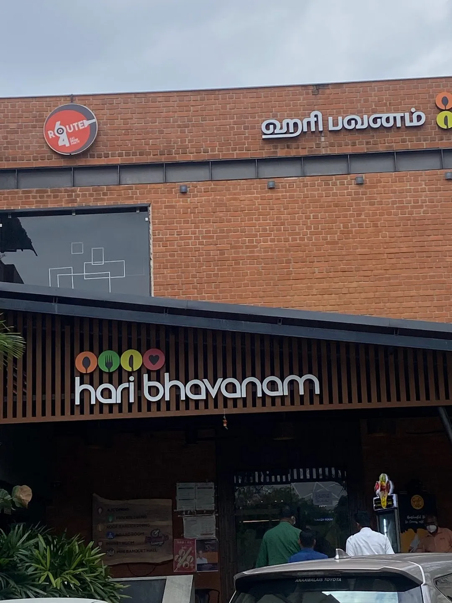
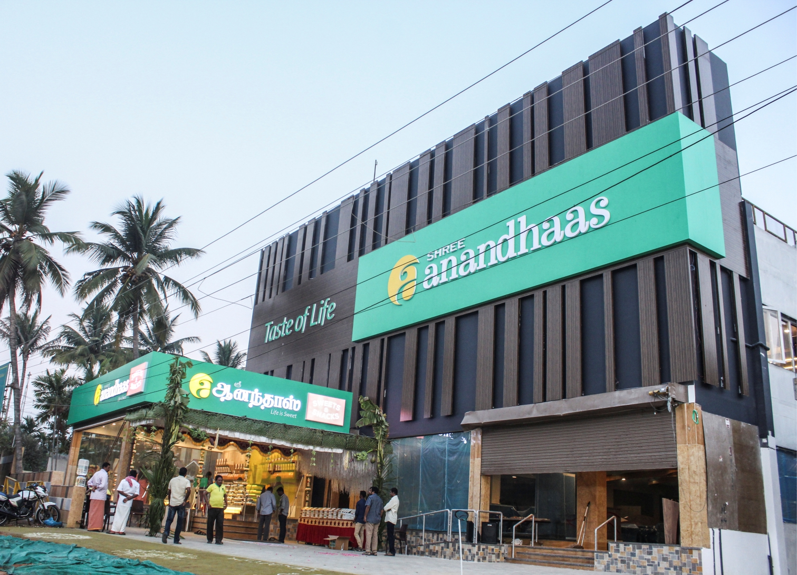
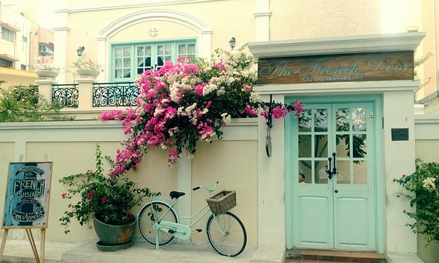

Popular Restaurants in Coimbatore

Sree Annapoorna – The Icon of South Indian Cuisine

Hari Bhavanam – The King of Non-Vegetarian Delicacies

Shree Anandhaas – The Perfect Spot for Tamil Nadu Delicacies
That’s Y Food – A Fine Dining Experience with Global Flavors

The French Door – A European-Style Café Experience
Kovai Kitchen– A Culinary Gem of Coimbatore!